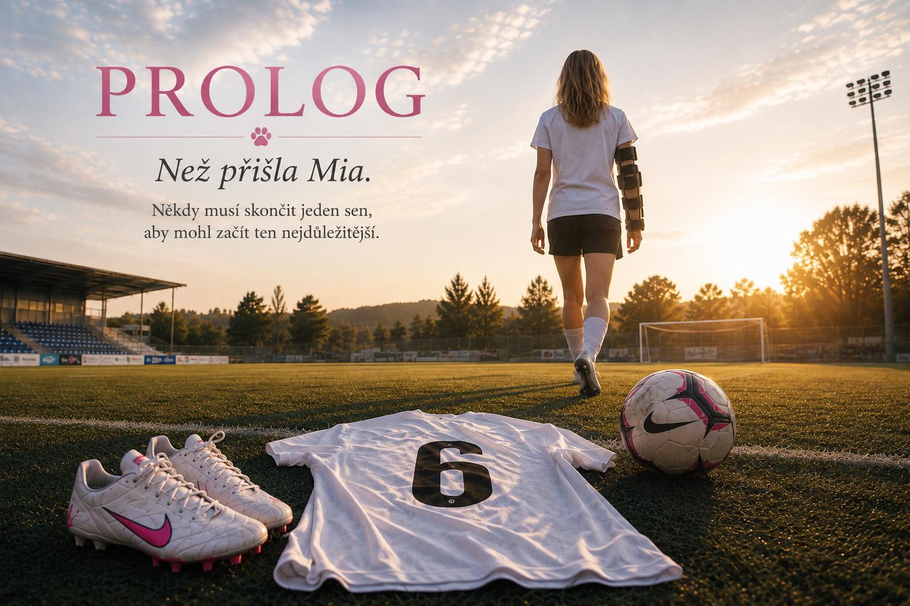

Hudba Prologu
Filmová píseň o konci jednoho snu a začátku cesty, jejíž smysl tehdy ještě nebylo možné vidět.
Každý příběh má svůj začátek
Ne vždy je to okamžik, který si pamatujeme nejvíc. Někdy je to chvíle, která nás potichu připravuje na všechno, co má teprve přijít.
Než přišla Mia, existoval jiný sen.
Fotbal nebyl jen hra. Byl to můj svět, moje cesta a místo, kde jsem přesně věděla, kým jsem.
Ten sen neskončil proto, že jsem se vzdala.
Skončil proto, že už nešlo pokračovat.
A právě jeho konec otevřel dveře tomu nejkrásnějšímu.
Dres s šestkou. Hřiště, na kterém jsem byla doma.
Zápasy, medaile, poháry a ocenění, která dodnes nesou vzpomínky.
Ne prohra. Jen okamžik, kdy už tělo nemohlo pokračovat.
Příběh, který napsal sám život. ♡